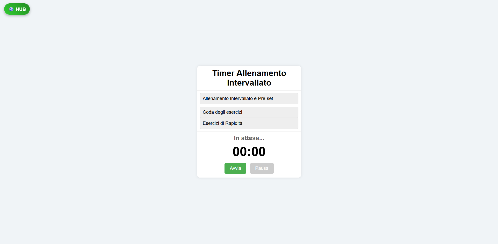
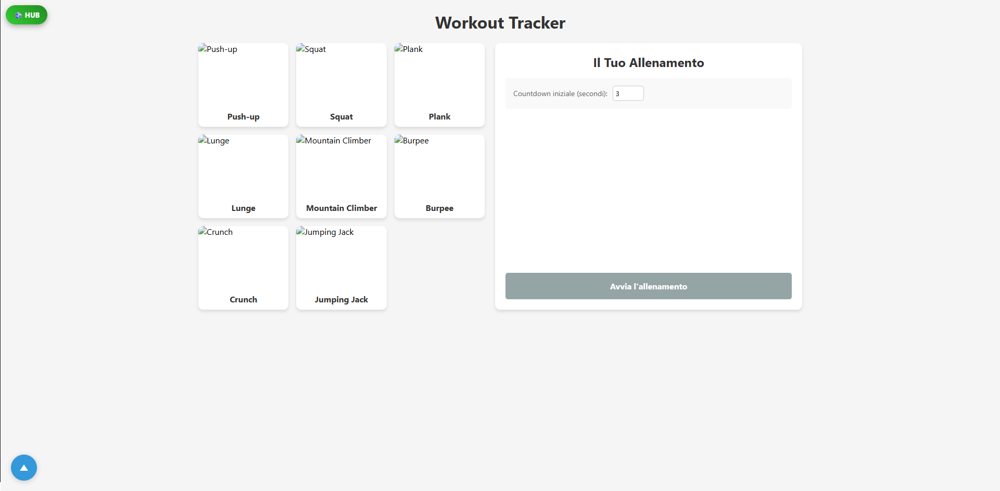
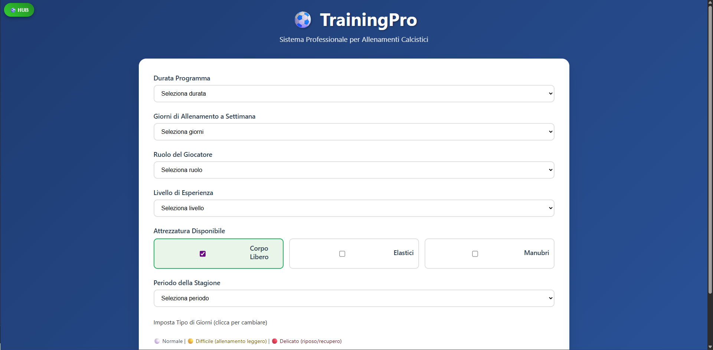
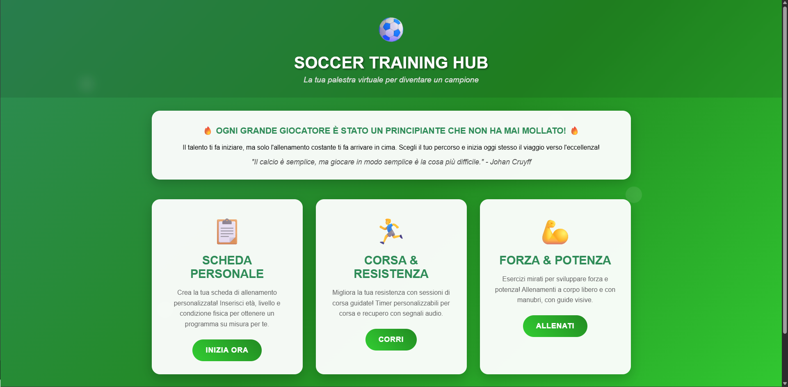
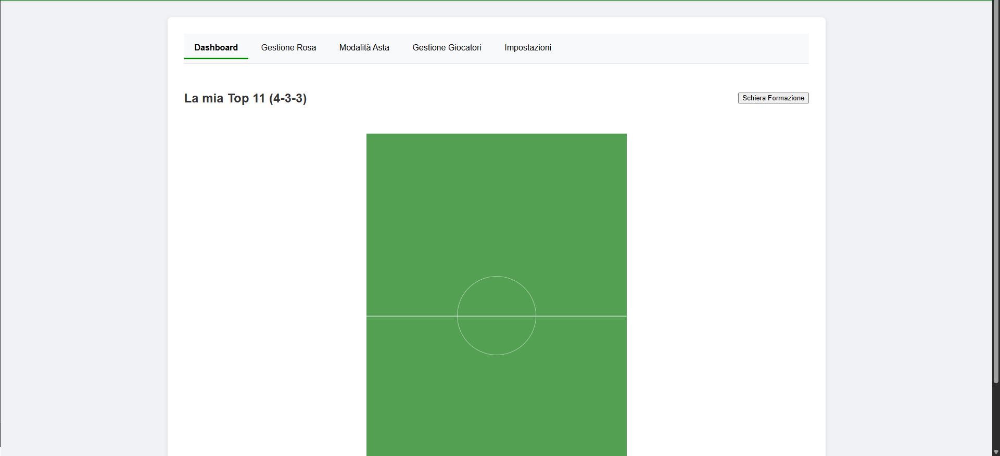

I miei progetti

Allenamento di corsa
Un sito per runner e calciatori che aiuta a gestire i tempi di corsa e recupero con timer automatici e fischi, e include esercizi di reattività.
Visita il sito
Allenamento per il fisico
Crea la tua coda di allenamento personalizzata scegliendo tra una varietà di esercizi a corpo libero o con manubri disponibili sul sito.
Visita il sito
Scheda personalizzata
Programma i tuoi allenamenti per tutto il mese. Pensato per i calciatori in pre-season, ma adattabile a chiunque voglia una scheda strutturata.
Visita il sito
Hub Allenamenti
Un punto di raccolta per tutti i siti di allenamento, pensato per atleti e calciatori per avere tutti gli strumenti a portata di mano.
Visita il sito
Fantacalcio Draft Helper
Uno strumento per i fantallenatori per creare e modificare la propria rosa prima dell'asta, per arrivare preparati e organizzati.
Visita il sito
Agriturismo Moretti
Un sito web commissionato dall'Agriturismo Moretti. Prossimamente disponibile.
Prossimamente